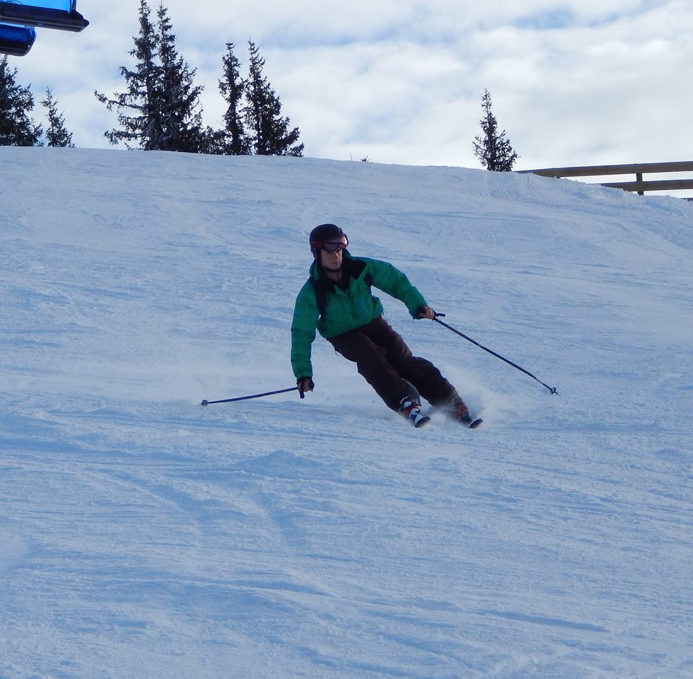
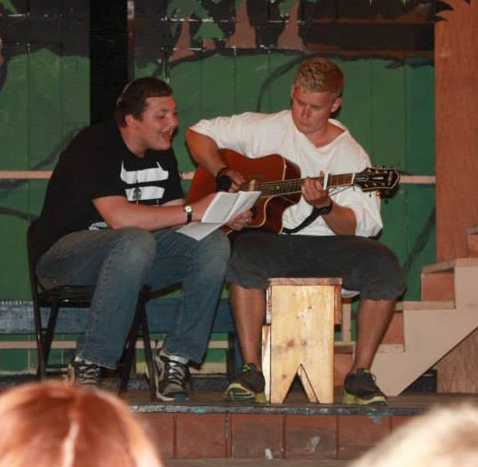

Firstly, thankyou for taking the time out to visit my portfolio!
My name is Louis John Bichard and I am a full stack web developer & currently a finalist Information Management & Computing student at Loughborough University.
My biggest passion is for Javascript, the big kind; both on the server and the client.
I find that due to Javascripts very unrestricting nature it allows for incredibly fluent, readbale and enjoyable code to write. I am also very aware that this flexibily loose-typed nature makes it a tough beast to tame and over time have come to be a great advocate of testing to complement the code that I write.
In my spare time I find myself writing more and more open source, both contributing to projects but also authoring projects. There is real value in open sourcing part of my programmes for feedback and improvement, aswell as the self scrutiny that comes in publishing a plugin!
My personal goal as a developer is to be complete, focusing on my strengths to create a killer combination of techical skills, new technology knowledge, business domain knowledge, communication, architecture, deployment, processes, leadership and a flexibility and willingness to learn (and everything inbetween!). I'm always looking to improve these areas as much as possible.
At 16 I got the first taste of weight training when I started training where I worked; a local hotel with my brother.
I trained mainly for the curiosity and to build strength for Rugby whilst my brother was training for his entry to the military. In the beginning we had a lot of fun just trying all the exercises we could online, every routine we saw in a magazine, or online we would try.
It obviously wasn't long before our competitive natures came out and we would be looking to beat each other at each and every step. In a blink of an eye I was addicted, I think initially just by learning something new and the curiosity.
Weight training soon became a lot more to me than just a hobby. I started exploring what makes the complete athlete, and to get the edge I started spending a lot more time on other areas, such as my nutrition and recovery. I soon started seeing that I was taking this a lot more seriously than those around me; but I was progressing far faster than them. This was my first realisation that whilst I wasn't super talented, talent sure did beat hard work when talent didn't work hard.
As time went on I started pursuing other avenues to keep my interest and motivation up which is when I entered the Powerlifting community. I begun competing competitively in the 2013 as a Junior (< 23's) in the Great British Powerlifting Federation, taking second in the 2013 All England qualifying and competing at nationals.
Due to the exposure to excellent coaching in Loughborough and my inquisiton I have recently taken on olympic weightlifting also. In 6 weeks achieving being only 35kg from the national qualifying total and it would be an honour to compete nationally. Olympic weightlifting forced me to really up my game and I am relishing the challenge.
Training keeps me disciplined, motivated and acts as a source of inspiration for my blog posts and my current e-book, The Brogrammer that I've recently migrated to this domain.
I was introduced to wakeboard firstly when I worked as a lifeguard at Camp Kingswood. Whilst I spent a little time on the board, I saw how quickly some of my colleagues were progressing and wanted in. When I was back for my second year I spent a lot more time on the board and this continued into my third year as the Waterfront Director. From then, any chance, cable or boat I jump at the chance to get back on the board!
At age 10 I got my first guitar from a friends dad who tried to learn at some point in his life, before casting the guitar to a dark corner of his loft. I took this from him and would play the riffs that my dad played to me in the car, it was mainly 80's rock and my first songs were the likes of Van Halen, Hendrix, Deep purple! From then I've played live in bands, taught and played for personal satisfaction and relaxation!